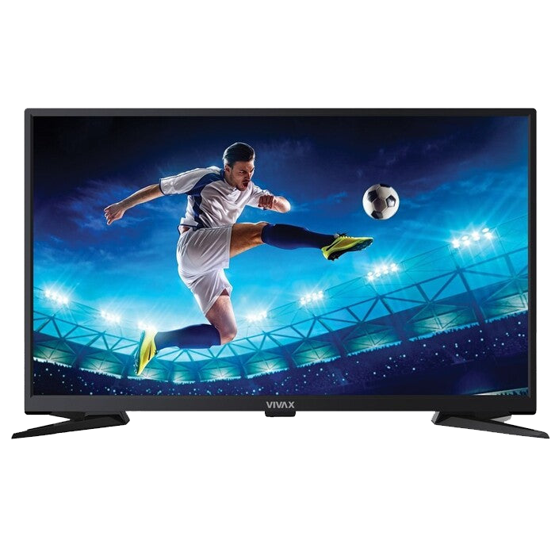
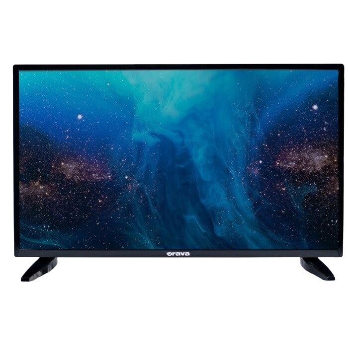
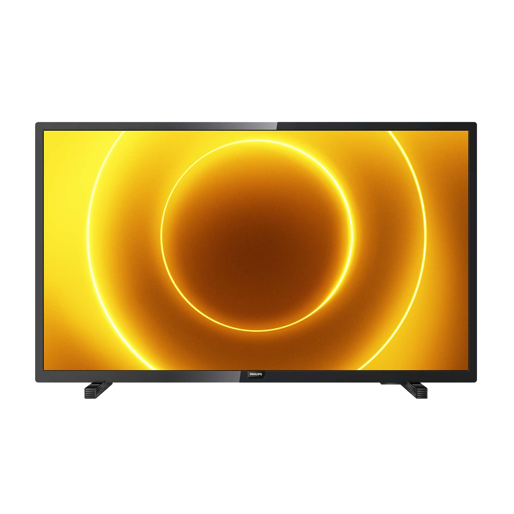

Uhlopriečka displeja 61 cm (24"), Rozlíšenie displeja 1366 x 768 px, Zvukový výkon 3 W, Formát digitálneho signálu DVB-C, DVB-S2, DVB-T2, Počet HDMI portov 1, Počet SCART konektorov 1, Počet USB 2.0 portov 1
Televízor s kompaktným dizajnom a uhlopriečkou 24" (61 cm) ideálny do menších priestorov
Port USB pre prehrávanie vašich obľúbených filmov a seriálov z externých zariadení
Mimoriadny kontrast a realistický obraz v podobe HD ready rozlíšenia
Vstavaný DVB-T2 / C / S2 tuner pre príjem programov prostredníctvom kábla alebo antény
Elektronický televízny programový sprievodca (EPG) s rezerváciou časovačov
Súčasťou balenia užívateľsky prívetivý diaľkový ovládač
Smart TV , Uhlopriečka displeja 81,3 cm (32"), Rozlíšenie displeja 1366 x 768 px, Zvukový výkon 16 W, Formát digitálneho signálu DVB-C, DVB-S2, DVB-T, DVB-T2, Počet HDMI portov 3, Počet USB 2.0 portov 2, Wi-Fi
operační systém Android a připojení k internetu zabezpečí televizi chytré funkce
HD Ready rozlišení se postará o krásné detaily při sledování
trojitý tuner DVB-T2/C/S2 zabezpečí vysoce kvalitní příjem
integrovaný USB port dovolí přehrávání z flash disků či nahrávání pořadů
hotelový mód umožňuje nastavit omezení jak s televizí zacházet nebo které programy sledovat
219 €

Televízor Vivax 32S60T2S2 (2019) / 32" (80cm)
Uhlopriečka displeja 81,3 cm (32"), Rozlíšenie displeja 1366 x 768 px, Zvukový výkon 12 W, Formát digitálneho signálu DVB-S2, DVB-T, DVB-T2, Počet HDMI portov 2, Počet SCART konektorov 1, Počet USB 2.0 portov 1
elegantný dizajn s minimálnymi rámčekmispestrí vašu obývačku
HD rozlíšenie sa postará o krásne detaily pri sledovaní
trojitý tuner DVBT/T2/C/S2 zabezpečí vysoko kvalitný príjem
integrovaný USB port umožní prehrávanie z flash disku či nahrávanie seriálov
139 €

Televízor Orava LT-847 (2019) / 32" (80 cm)
Uhlopriečka displeja 81,3 cm (32"), Rozlíšenie displeja 1366 x 768 px, Zvukový výkon 12 W, Formát digitálneho signálu DVB-C, DVB-T2, DVB-T, Počet HDMI portov 2, Počet USB 2.0 portov 1, Energetická účinnosť F
o skvelý obraz sa pri tomto modeli postará HD Ready rozlíšenie, ktoré je zárukou maximálnych detailov
USB pripojenie sa postará o prehrávanie filmov z externého harddisku alebo naopak o nahrávanie
153,24 €

Televízor Philips 32PHS5505 (2020) / 32" (80 cm)
Uhlopriečka displeja 81,3 cm (32"), Rozlíšenie displeja 1366 x 768 px, Zvukový výkon 10 W, Formát digitálneho signálu DVB-C, DVB-S, DVB-S2, DVB-T, DVB-T2, DVB-T2 HD, Počet HDMI portov 2, Počet USB 2.0 portov 1
32“ televízor s uhlopriečkou 80 cm pre perfektný a ničím nerušený zážitok
Televízor disponuje funkciou Philips Pixel Plus HD, ktorá optimalizuje kvalitu obrazu
Rozlíšenie panela je 1920 x 1080pxa práve vďaka tomuto rozlíšeniu krásne vyniknú aj tie najmenšie detaily